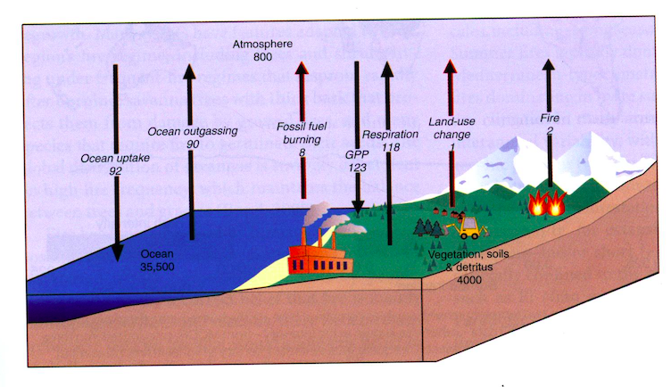
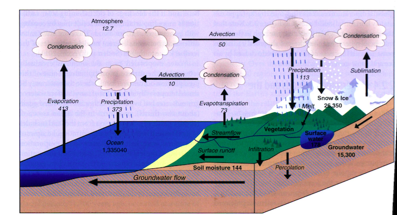

fluxmodeler
The fluxmodeler is an interactive box model tool that allows users to build box models,
model fluxes, and explore their effects on reservoirs over time.
instructions
(1) Add boxes by double clicking on the screen.
(a) Label them by changing the text in the top input box.
(b) Change their budget by entering a number in the bottom input box and clicking "enter".
(2) Add fluxes by clicking and dragging a line from one box to another.
(a) Enter a number in the input box and click "enter" to indicate the magnitude of flux.
(3) Click on the "MOVE" button to drag boxes around.
(4) Click "►/||" to play or pause the model.
(5) Click "▉" to stop the model and reset the timer.
(6) Move the slider to slow down or speed up the model.
examples
Systems that could be modeled using this framework (from
Cornell, S., I. C. Prentice, J. House, and C. Downy eds. 2012.
Understanding the earth system: global change science for application.
Cambridge: Cambridge University Press.):


code
This program is written in javascript with help from
p5.js.
You can view and fork the source code on the
github repo.
Licensed under a
Creative Commons license.